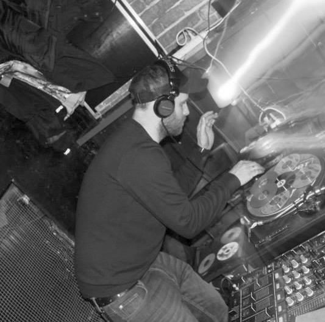
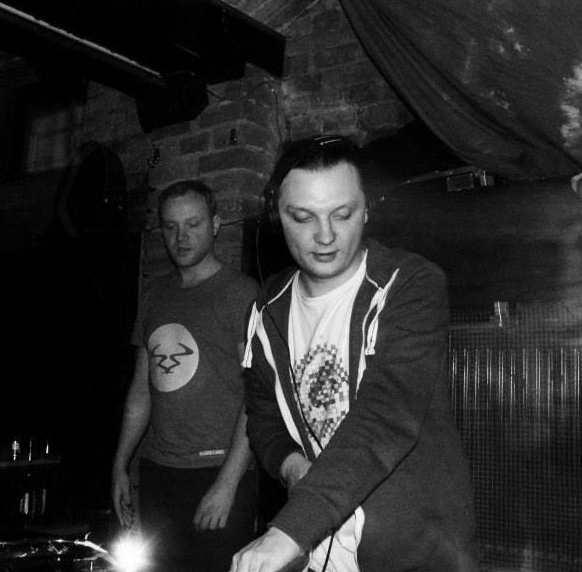
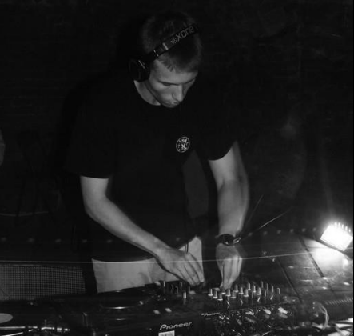

Piotrkowsko-bełchatowki teem muzyków, DJ prezentujących muzyke elektroniczną.
A.tra
Przedstawiciel piotrkowskiej sceny elektronicznej, od kilku lat dj i promotor lokalnych imprez DnB i Acid Techno. Od 2011 roku pod szyldem Friday Nite Crew którego jest współzałożycielem. Jego sety to głównie mroczne brzmienia dnb i neurofunku oraz klimatyczne brzmiania deep drum'n'bass.
Spider
Pasjonat muzyki, płyt winylowych, motoryzacji i dobrego jedzenia. Pochodzący z Bełchatowa Dj oraz promotor Drum'n'bassu. W setach przywiązuje wielką uwagę do spójności w doborze numerów oraz tworzeniu klimatu dla tego każdy jego set jest przygotowywany specjalnie pod wydarzenie. Miksuje głównie odmiany techstep/neurofunk choć nie stroni od lżejszych brzmień oscylujących wokół atmosferycznej głębi gatunku.
Qbass
Urodzony w Zagłębiu Belchatowskim, w mieście, w którym zaczęła się jego przygoda z miksowaniem. W dziedzinie tej realizuje się i spełnia od wielu lat, grając , tworząc i propagując różne oblicza muzyki klubowej (głównie rytmy bogate w żywe instrumenty jak i wokal).Sety Qbass przepełnione są eklektyzmem muzycznym jak i skocznością.
Imprezy
- 04.05.2018 - Game Ower klub Spirala Piotrków Tryb.
- 07.4.2018 - More dnb klub Spirala Piotrków Tryb.
Imprezy minione
- 04.03.2018 - miusic for people klub Spirala Piotrków Tryb.
- 07.2.2018 - power klub Spirala Piotrków Tryb.
Friday nite in Facebook
Style
- dnb
- house
- techno